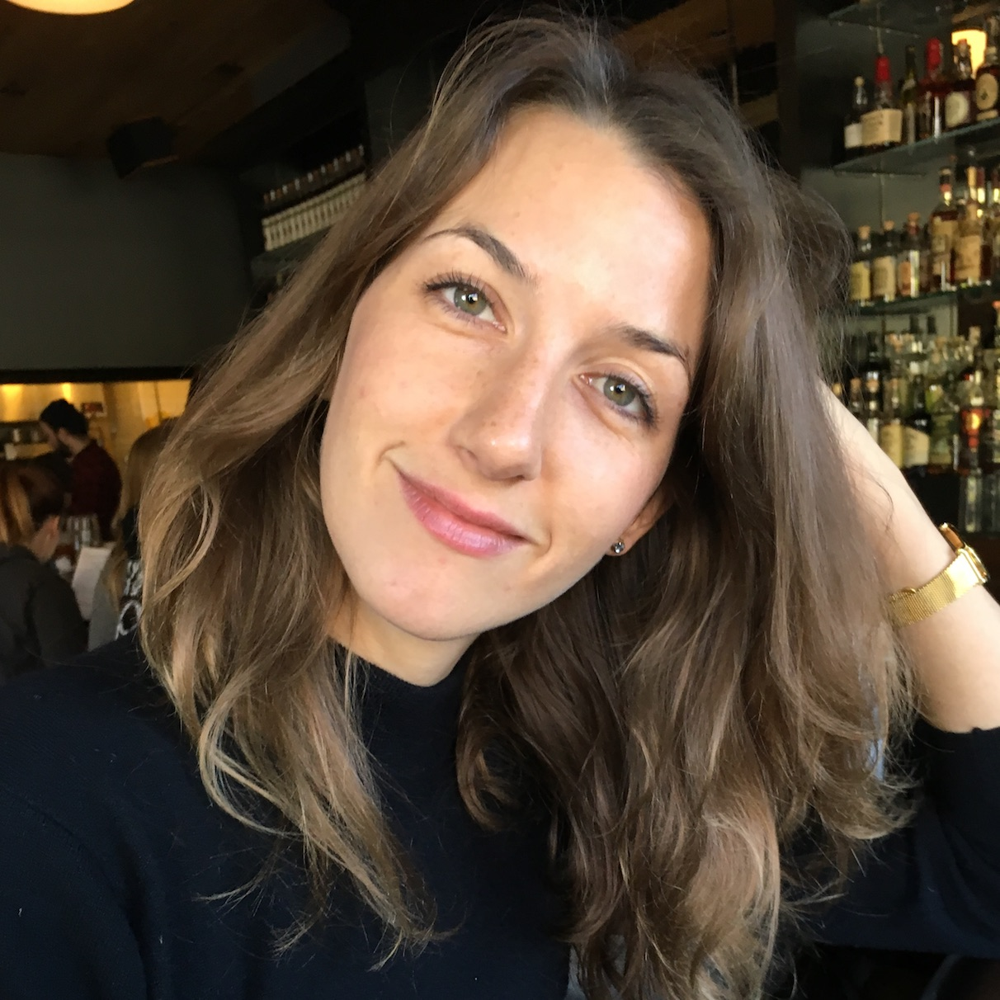

Lucy Gillespie
Lucy Gillespie is an Anglo-American writer and producer based in New York City. Her plays include OUTFOXED (FullStop Collective, 2012), ATWATER PROJECT (terraNOVA Groundworks Reading, 2012), and HANGMAN SCHOOL FOR GIRLS (Vagabond/FullStop, 2010). She has worked with Ensemble Studio Theater, Naked Angels, [the claque], IRT, P.S. 122, the O’Neill, and site-specifically around New York. She is a Youngblood alumnus, a terraNOVA Groundbreaker, a MacDowell Colony fellow, and a recent MFA graduate of NYU’s Dramatic Writing Program. She is currently producing her original series, Unicornland, which will air in October 2016.
Full-Length Plays
- The Forum
- Staged Reading, the Claque, The Sheen Center, January 2015, directed by Jessi D. Hill
- One Of Us
- Staged Reading, Ensemble Studio Theatre/Youngblood’s Bloodworks, June 2014, directed by Jessi D. Hill
- Outfoxed
- Produced by FullStop Collective, November-December 2012, directed by Brian Hashimoto
- Atwater Project
- Staged Reading, terraNOVA Groundworks, IRT, December 2012, directed by Jessi D. Hill
- Finalist for the National Playwright’s Conference, 2011, Eugene O’Neill Theater Center
- Staged Reading at P.S. 122, February 2010, directed by Megan Carter
- Hangman School For Girls
- Produced by Vagabond Theater Ensemble and FullStop Collective, March 2010 at Manhattan Theater Source, directed by Leta Tremblay
- The Lucky Ones
- Staged Reading at Endstation Theatre Company, Blue Ridge Mountain Summer Theatre Festival at Sweet Briar College
- Salon Reading at PlayPartyParkSlope, February 2011, directed by Jesse Geiger
One-Acts and Shorts
- 322 Days
- Naked Angels/Paines Plough Theatre, January 2016
- I Want It That Way
- Ensemble Studio Theatre/Youngblood, June 2015, directed by Matt Dickson
- My Name Is ___ And I Belong To You
- Ensemble Studio Theatre/Youngblood, January 2015, directed by Nick Leavens
- The Things I Do When You're Away
- Ensemble Studio Theatre/Youngblood, September 2014, directed by Leta Tremblay
- Evolved
- Ensemble Studio Theatre/Youngblood, February 2014, directed by Nick Leavens
- Shut Up And Take It
- Caps Lock Theater Company, NYC, February 2013, directed by Heather Cohn
- Bad Seed
- Ensemble Studio Theatre/Youngblood, February 2013, directed by Andrew Grosso
- Regret Regret Regret: You'll Never Get It Back
- Ensemble Studio Theatre/Youngblood, October 2012, directed by RJ Tolan
- Leave The Dog
- Ensemble Studio Theatre/Youngblood, September 2011, directed by Mia Walker
Fellowships and Honors
Member of Obie-Award Winning Youngblood Playwrights Group, MacDowell Colony Fellow, Byrdcliffe Colony Fellow, terraNOVA Groundbreakers Writer 2009-2010, Burton S. and Rita Goldberg Fellowship, NYU Tisch MFA Candidate
Training
MFA Dramatic Writing, NYU Tisch, Class of 2014, B.A. Theater and Fiction Writing, Northwestern University, Class of 2008, National Theater Institute Theatermaker – Acting and Playwriting, 2007, Playwriting / Screenwriting Classes in NYC – Mac Wellman, Karen Hartman, Francine Volpe, Long-Form Improvisation – iO Chicago, Magnet Theater NYC, Annoyance Theater Chicago